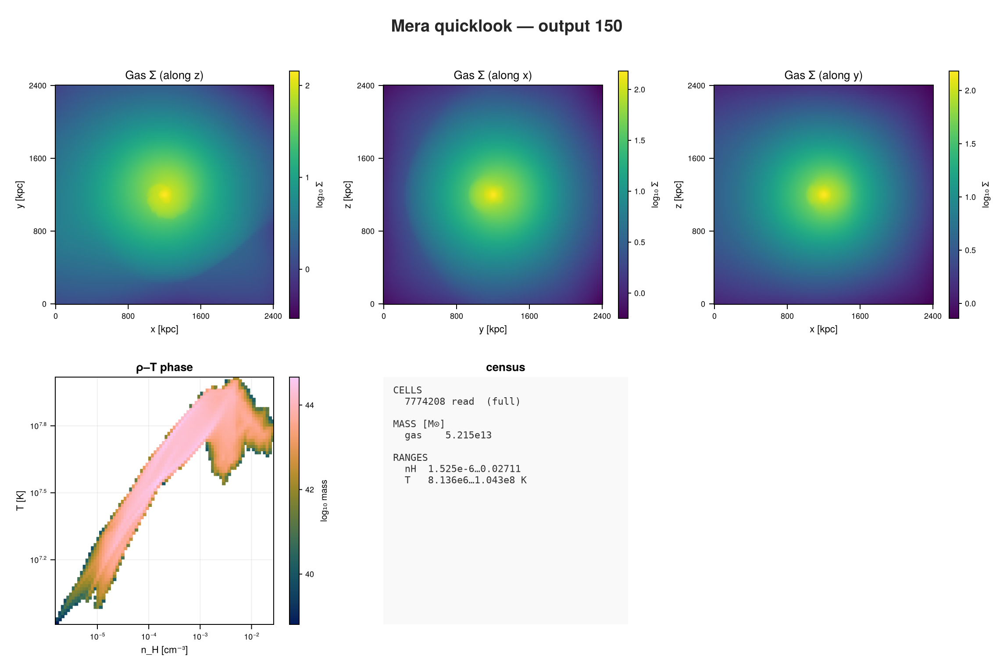
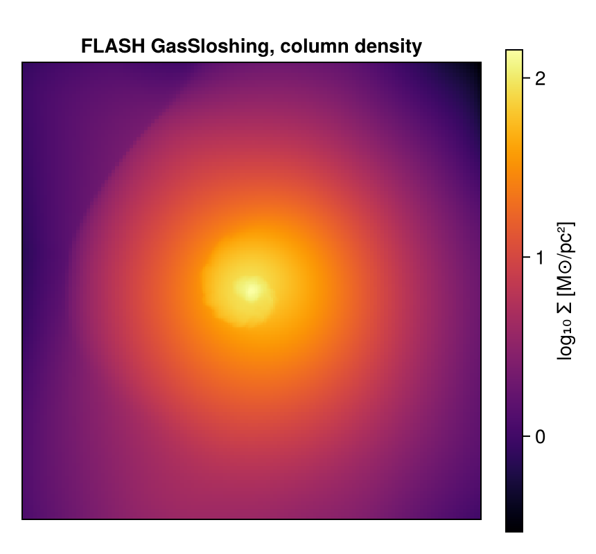

FLASH: First Inspection
This page is also an executable Jupyter notebook: open / download 43_flash_First_Inspection.ipynb. The notebooks run end-to-end and double as part of Mera's test suite.
FLASH writes HDF5 plot files on a PARAMESH block-structured grid. This page opens one, looks at what it holds, and uses it to settle a question the earlier pages had to leave open.
The run is GasSloshing, a galaxy cluster with sloshing intracluster gas: 2.4 Mpc across, 4 refinement levels, about 7.8 million cells.
It is the GasSloshing sample from the yt project:
curl -O https://yt-project.org/data/GasSloshing.tar.gz
tar xzf GasSloshing.tar.gz1. One call to see everything
FLASH writes in CGS, so unlike PLUTO or Athena++ there are no unit constants to supply: the physical numbers below are real.
using Mera, CairoMakie
path = "/Volumes/FASTStorage/Simulations/Mera-Tests/FLASH/flash_gassloshing/GasSloshing"
ql = quicklook(150; path=path);*__ __ _______ ______ _______
| |_| | | _ | | _ |
| | ___| | || | |_| |
| | |___| |_||_| |
| | ___| __ | |
| ||_|| | |___| | | | _ |
|_| |_|_______|___| |_|__| |__|
Mera v2.0.0-DEV | Julia 1.12.7 | 8 threads
[ Info: Mera v2.0.0-DEV
[Mera]: quicklook output 150, reading gas: 2026-09-15T22:00:45.991
2169 CPU file(s), levels 7-10 of 10 (full resolution)
projecting 3 gas map(s) [z, x, y] and the phase diagram from 7774208 cells
┌─ Mera quicklook ── output 150 (FLASH) ───────────────
│ box : 2400.0 kpc levels 7–10 (finest 2344.0 pc)
│ grid : ndim 3 · ncpu 2169 · nvarh 12
│ time : 3750.0 Myr (non-cosmological)
│ read : 7774208 cells (full resolution)
│ gas mass : 5.215e13 M⊙
│ nH range : 1.525e-6 … 0.02711 cm⁻³
│ T range : 8.136e6 … 1.043e8 K
└─ 27.94 s ──────────────────────────────────
[Mera]: quicklook output 150 finished: 2026-09-15T22:01:12.539quicklookplot(ql)
2. The details: getinfo
info = getinfo(150, path);[Mera]: 2026-09-15T22:01:29.301
Code: FLASH
output: 150 time: 1.1835e17 [code units]
root grid: 16³ (level 4), FLASH lrefine 4:7 ⇒ levels 7:10, boxlen = 7.40544e24
blocks: 2169 (16³ cells each) variables: (rho, temp, p, gpot, divb, vx, vy, vz, bx, by, bz, magp)
-------------------------------------------------------
[Mera]: FLASH eos_singlespeciesa = 0.5924 used as the mean molecular weight.
[Mera]: composition in use: X = 0.76, mu = 0.5924 (X is the default; the format does not record one)info.simcode, info.levelmin, info.levelmax, info.variable_list("FLASH", 7, 10, [:rho, :temp, :p, :gpot, :divb, :vx, :vy, :vz, :bx, :by, :bz, :magp])A long variable list: density, pressure, velocities, a magnetic field, the gravitational potential, and temp, the temperature the simulation itself computed. That last one matters below.
The scale is a galaxy cluster:
info.boxlen * info.scale.Mpc # box size in Mpc2.3999396582866828info.time * info.scale.Gyr # snapshot time in Gyr3.75031402699295543. What else could be loaded?
capabilities(info)2-element Vector{Symbol}:
:info
:hydro3. Load the gas, and look at the refinement
gas = gethydro(info);[Mera]: FLASH hydro 7774208 cells, vars rho, temp, p, gpot, divb, vx, vy, vz, bx, by, bz, magpamroverview(gas)Counting...Table with 4 rows, 3 columns:
level cells cellsize
──────────────────────────
7 1843200 5.7855e22
8 1777664 2.89275e22
9 1728512 1.44637e22
10 2424832 7.23187e21gas.dataTable with 7774208 rows, 16 columns:
Columns:
# colname type
────────────────────
1 level Int32
2 cx Int32
3 cy Int32
4 cz Int32
5 rho Float64
6 temp Float64
7 p Float64
8 gpot Float64
9 divb Float64
10 vx Float64
11 vy Float64
12 vz Float64
13 bx Float64
14 by Float64
15 bz Float64
16 magp Float64msum(gas, :Msol) # total gas mass5.214760643349828e134. Temperature and density
Most formats do not store a temperature, so Mera derives it from pressure and density. That needs the mean molecular weight, and FLASH records it: eos_singlespeciesa in the runtime parameters, the same value yt reads. The reader applies it, so the derived temperature matches the simulation with nothing for you to do. gethydro prints the value it used.
extrema(getvar(gas, :T, :K)) # Kelvin(8.136265787700174e6, 1.0433426821483617e8)If you want to check, the value FLASH itself wrote is in the table as :temp:
extrema(getvar(gas, :temp))(8.13886e6, 1.04367528e8)extrema(getvar(gas, :rho, :nH)) # cm^-3, with X = 0.76 assumed(1.5248586047054073e-6, 0.027110935987346135)On this run it is 0.5924, the value for a fully ionised plasma, which is what a galaxy cluster is. The two agree to about three parts in 10⁴; the small residual is real, because FLASH's equation of state is not a pure γ-law.
Number density is a different matter. :nH needs the hydrogen mass fraction, and no FLASH plot file records one. Mera uses 0.76, the RAMSES convention, and says so rather than pretending to know. It cannot be recovered from eos_singlespeciesa either: that plus the recorded mean charge do not describe a pure hydrogen-helium mix, so any value would be an invention. The error is about 1%, and if your run assumes something else, state it:
setcomposition!(info; X_frac=0.75) # mu stays as the file recorded it5. A projection
proj = projection(gas, :sd, :Msol_pc2, direction=:z, res=256);
size(proj.maps[:sd])[Mera]: 2026-09-15T22:01:50.207
domain:
xmin::xmax: 0.0 :: 1.0 ==> 0.0 [Mpc] :: 2.4 [Mpc]
ymin::ymax: 0.0 :: 1.0 ==> 0.0 [Mpc] :: 2.4 [Mpc]
zmin::zmax: 0.0 :: 1.0 ==> 0.0 [Mpc] :: 2.4 [Mpc]
Selected var(s)=(:sd,)
Weighting = :mass
Effective resolution: 256^2
Map size: 256 x 256
Pixel size: 9.375 [kpc]
Simulation min.: 2.344 [kpc]
Available threads: 8
Requested max_threads: 8
Variables: 1 (sd)
Processing mode: Sequential (single thread)(256, 256)fig = Figure(size=(430, 400))
ax = Axis(fig[1,1]; title="FLASH GasSloshing, column density", aspect=DataAspect())
hidedecorations!(ax)
hm = heatmap!(ax, log10.(proj.maps[:sd]'); colormap=:inferno)
Colorbar(fig[1,2], hm, label="log₁₀ Σ [M⊙/pc²]")
fig
Where to go next
The same calls as on every other code, on block-structured AMR, in physical units, with a stored temperature that let us check Mera's derivation against the simulation's own.
From here every tutorial on this site applies unchanged.